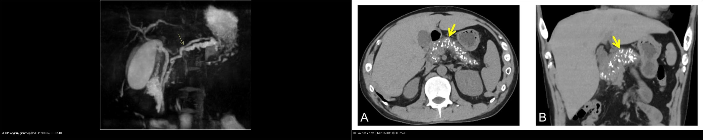
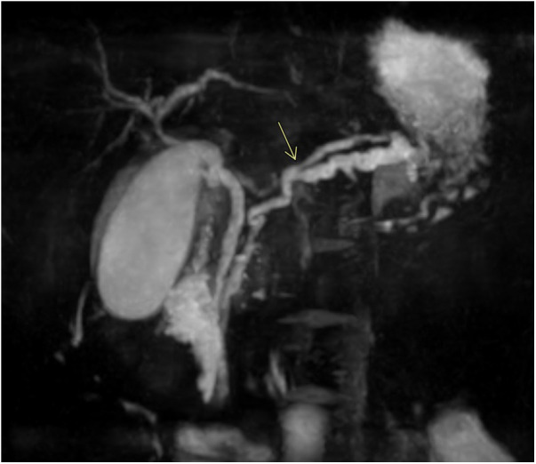
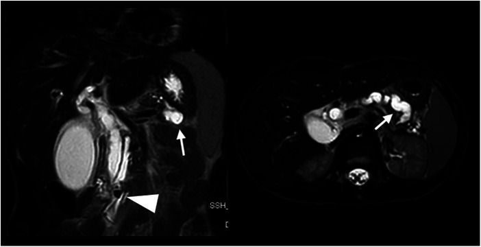
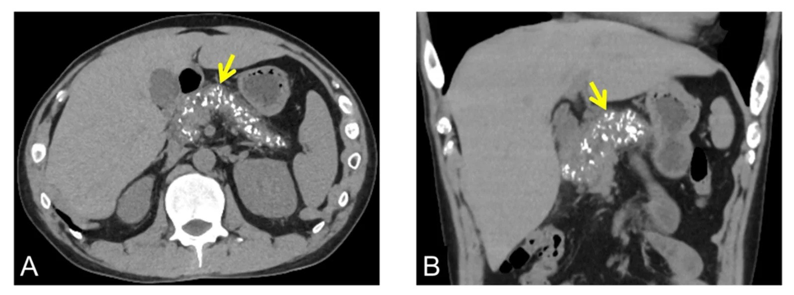
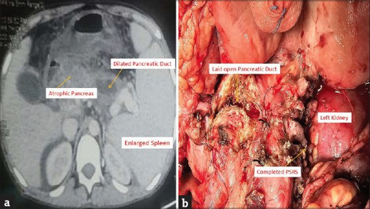
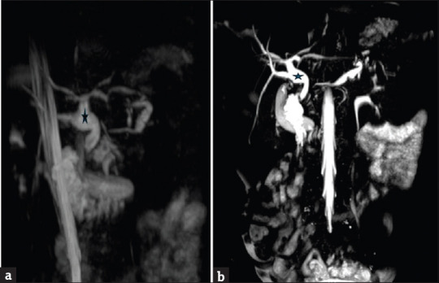
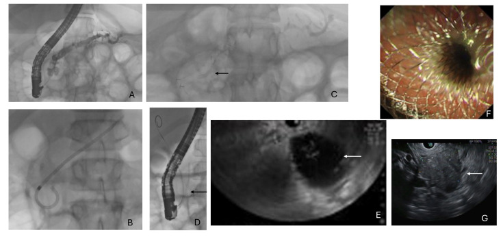
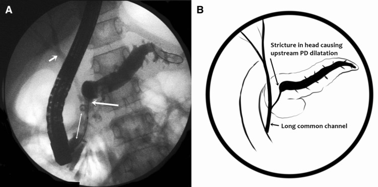

629 — Viêm tụy mạn ở trẻ & suy tụy ngoại tiết: vôi hóa, ống tụy giãn "hồ nước" & định lượng thiếu hụt men / Pediatric chronic pancreatitis & exocrine pancreatic insufficiency
Tags: pattern:viem-tuy-man pattern:suy-tuy-ngoai-tiet vung:tuy score:Cambridge protocol:MRCP-secretin protocol:EUS
Mức chắc chắn (certainty): tổng hợp y văn (literature synthesis) — nhóm tự biên từ y văn mở (Front Pediatr 2024, J Clin Med 2024, Pediatr Radiol/Diagnostics 2025–2026, JIAPS 2025–2026) có số; các ca trong quiz là ca nguyên văn (verbatim case) chép đúng tuổi – bối cảnh – chú thích gốc (Destro/Front Pediatr, Kumar V/JIAPS, Kumar B/JIAPS, Joshi/J Clin Med, Sundaram/Cureus). Ca minh họa người lớn (Kawaguchi/Cureus, 34 tuổi) được ghi rõ tuổi để không ngộ nhận là ca nhi.
1. Tổng quan bệnh học – cơ chế hình ảnh
Viêm tụy mạn (chronic pancreatitis, CP) ở trẻ là một hội chứng viêm–xơ tiến triển, KHÔNG hồi phục, khác về bản chất với viêm tụy cấp/tái phát (acute recurrent pancreatitis, ARP). Mỗi trẻ nghi CP cần trả lời 3 câu: (1) đã có tổn thương cấu trúc không hồi phục chưa (vôi hóa/ống giãn/teo)? (2) đã mất chức năng ngoại tiết/ngoại tiết chưa? (3) có nguyên nhân GIẢI PHẪU hay DI TRUYỀN xử lý được gốc không?
- Dịch tễ: CP trẻ em ~0,5–2,0/100.000 trẻ/năm (Joshi 2024: 0,5–2,0; nhóm châu Âu ~2/100.000). Trong các cohort chuyên khoa, suy tụy ngoại tiết (exocrine pancreatic insufficiency, EPI) gặp tới 76% trẻ CP; vôi hóa tụy 44–46%, trong đó 38% có nang giả (Kumar V 2025: 48 trẻ, calcific 22/48 = 44%). Bệnh thường được chẩn đoán muộn vì đau bụng mơ hồ.
- Cơ chế tiến triển: viêm tái diễn do ứ đọng dịch tụy (tăng tiết sau bữa ăn béo), hẹp ống, sỏi calci + hoạt hóa men nội bào → xơ hóa, mất tế bào nang (acinar) rồi tế bào đảo (islet) → mất dần chức năng ngoại tiết rồi nội tiết (đái tháo đường típ 3c, "brittle"). Đây là "học thuyết mất nhu mô": tổn thương tích lũy và không đảo ngược, khác phù kẽ hồi phục của viêm tụy cấp.
- TẠI SAO vôi hóa = tín hiệu chốt: calci carbonat/phosphate lắng trong lòng ống và nhu mô → đậm độ rất cao trên CT (~200–1000 HU), thấy cả trên X-quang bụng không cản quang; ngược lại MRI/MRCP có "điểm mù": vôi hóa nhỏ gần như không thấy (vì calci không có proton) → CP vôi hóa có thể bị bỏ sót trên MRI. Vì vậy khi nghi CP phải có 1 lát CT không cản quang dù theo dõi chủ yếu bằng MRI.
- TẠI SAO ống tụy giãn sáng trên T2/MRCP: ống chứa dịch giàu bicarbonate/nước → tín hiệu rất sáng trên T2/MRCP (nước tự do); khi có hẹp/sỏi tạo tăng áp lực → ống chính giãn, uốn lượn, phình–hẹp xen kẽ ("chain of lakes — chuỗi hồ"). Vôi hóa/sỏi trong lòng ống là khuyết thiếu (filling defect) trên MRCP và nốt đậm trên CT.
- TẠI SAO tụy teo và tăng echo/xơ: thay nhu mô tụy bằng mô xơ → tụy nhỏ, tăng hồi âm (hyperechoic), giảm tín hiệu T1 (mất mỡ/giàu protein sinh lý) và ngấm thuốc không đồng nhất.
- Định nghĩa thiếu hụt chức năng (quantitative): steatorrhea chỉ xuất hiện khi mất > 90% chức năng acinar, và lipase (không phải amylase) suy giảm/bị phá hủy sớm nhất → thiếu hụt chủ yếu là mỡ và vitamin tan trong mỡ. Xét nghiệm sàng lọc: fecal elastase-1 (ELISA) < 200 µg/g phân = EPI; 100–200 µg/g = nhẹ–trung bình, < 100 µg/g = nặng, gắn với steatorrhea**. Tiêu chuẩn vàng là **hệ số hấp thu mỡ CFA (coefficient of fat absorption)**, bình thường **> 90–93%.
2. Mẫu hình + chẩn đoán phân biệt theo cơ chế – vị trí (Gamut)
Gamut theo CƠ CHẾ NGUYÊN NHÂN (nhớ bằng TIGAR-O): Toxic–metabolic (rượu, tăng triglyceride, tăng calci, ĐTĐ), Idiopathic, Genetic (PRSS1 trội, SPINK1/CFTR/CTRC/CPA1), Autoimmune (AIP típ 1/2), Recurrent acute (hoại tử nặng để lại sẹo), Obstructive (tụy phân đôi, hợp lưu tụy–mật bất thường, nang ống mật chủ, tụy vòng, hẹp/sỏi).
- Ở trẻ, thứ tự khác người lớn (Joshi 2024, n ≈ 104–110): cryptogenic/vô căn ~28%, giải phẫu 22%, di truyền 20%, tự miễn 12%, sỏi mật 7% — nghĩa là bất thường ống tụy–mật + gen chiếm gần một nửa, phải chủ động tìm.
- Tụy phân đôi (pancreas divisum): hai hệ ống không hợp nhất; ống tụy lưng dẫn lưu gần như toàn bộ tụy qua nhú nhỏ hẹp → tăng áp ống lưng → viêm tái phát. Là biến thể khá phổ biến, chỉ bệnh lý khi kèm viêm tái phát/giãn ống.
- Hợp lưu tụy–mật bất thường (anomalous pancreatobiliary ductal union, APBDU): kênh chung dài, trào ngược dịch tụy vào đường mật → viêm tụy–đường mật tái phát, liên quan nang ống mật chủ và nguy cơ ung thư đường mật về sau.
Gamut theo MẪU HÌNH HÌNH ẢNH (cùng tụy, khác giai đoạn):
- Vôi hóa + ống giãn + teo = CP tiến triển (calcific CP).
- Ổ không ngấm > 30–50% nhu mô = hoại tử (viêm tụy cấp/đợt cấp trên mạn).
- Tụ dịch > 4 tuần, vỏ rõ = nang giả tụy (pseudocyst); kèm mảnh hoại tử = WON.
- Tụy to hình xúc xích, viền ngấm, ống NOT dilated = viêm tụy tự miễn (AIP, thường IgG4+).

Trái: MRCP — ống tụy chính giãn, uốn lượn, hẹp xen kẽ (mũi tên vàng). Phải: CT không cản quang (A lát ngang, B tái tạo coronal) — vôi hóa tụy lan tỏa (mũi tên vàng). Nguồn: Destro F et al., Front Pediatr 2024 (PMC11228964, CC BY 4.0) + Kawaguchi Y & Hamaoka K, Cureus 2026 (PMC13500114, CC BY 4.0). Ảnh ghép letterbox, giữ tỉ lệ.3. Bảng so sánh phân biệt (ma trận đối chiếu)
| Thực thể (entity) | Hình ảnh điển hình | Chốt vào (rule-in) | Chốt loại (rule-out) | Gợi ý xác nhận |
|---|---|---|---|---|
| Viêm tụy mạn vôi hóa (calcific CP) | CT: vôi hóa lan tỏa/HU > 200 + ống chính giãn > 5 mm + teo; X-quang bụng thấy sỏi calci | Vôi hóa nhu mô hoặc sỏi ống + ống giãn không hồi phục | Vôi hóa đơn độc mạch máu/nốt lành; ống bình thường + tụy không teo → chưa mạn | CT không cản quang bắt buộc; đối chiếu phim cũ |
| Viêm tụy cấp/tái phát (ARP) | Tụy to lan tỏa, thâm nhiễm mỡ quanh tụy, ngấm đồng nhất; không vôi hóa, không teo | Hồi phục trên phim lại, men > 3× ULN | Có vôi hóa/ống giãn cố định → đã chuyển mạn | Siêu âm đầu tay; MRI 3–6 tháng để phát hiện chuyển mạn |
| Tụy phân đôi (pancreas divisum) | MRCP: ống lưng dẫn lưu qua nhú nhỏ, ống bụng ngắn | Hai hệ ống không hợp nhất + viêm tụy tái phát | Ống hợp nhất bình thường → không phải divisum | MRCP ± secretin; ERCP can thiệp nhú nhỏ |
| Hợp lưu tụy–mật bất thường (APBDU) | MRCP/chụp mật: kênh chung dài bất thường, ống tụy–mật hợp lưu xa tá tràng | APBDU + nang ống mật chủ/viêm tái phát | Hội lưu đúng vị trí tại nhú → loại | MRCP; ERCP (phân loại Komi); theo dõi nguy cơ ung thư mật |
| Viêm tụy tự miễn (AIP/IgG4) | Tụy to hình xúc xích, viền ngấm đối xứng, ống KHÔNG giãn | IgG4 máu cao + ngấm đối xứng + đáp ứng corticoid | Vôi hóa + ống giãn + teo → CP cổ điển, không AIP | MRCP/CT động, IgG4, sinh thiết nếu cần |
| Nang giả tụy vs u nang | Nang dịch, vỏ mỏng, quanh tụy/ổ bụng | Bối cảnh viêm tụy trước + dịch đồng nhất, KHÔNG mảnh hoại tử | Nốt/vách/tăng dần hoặc không thoái triển → u nang (IPMN/MCN) | MRI/MRCP; theo dõi > 4 tuần |
Bảng phân biệt thiếu hụt ngoại tiết (EPI) với kém hấp thu khác:
| Chỉ số | EPI (nguồn tụy) | Kém hấp thu không do tụy | Ngưỡng/ghi chú |
|---|---|---|---|
| Fecal elastase-1 | < 200 µg/g (nặng < 100) | Bình thường | Đặc hiệu cao (96,4%), độ nhạy thấp (~25%) |
| CFA (72 giờ) | < 90% | Bất thường theo nguyên nhân | Tiêu chuẩn vàng, không đặc hiệu tụy |
| Lipase/amylase | Có thể bình thường giai đoạn muộn | Bình thường | Bình thường KHÔNG loại trừ |
| Vitamin A/D/E/K | Thiếu (thiếu hụt mỡ) | Tùy bệnh | Soi đáy mắt (A), xương (D), đông máu (K) |
Dấu hiệu "đọc chuẩn xác"
- "Chain of lakes" (chuỗi hồ): ống chính giãn > 5 mm phình–hẹp xen kẽ + sỏi/hẹp = CP tiến triển.
- Vôi hóa là chốt trên CT, nhưng MRI mù: nếu chỉ có MRI, đừng kết luận "không vôi hóa" — nên đối chiếu X-quang/CT không cản quang.
- Teo tụy + giảm T1 + tăng echo = mô xơ thay nhu mô; tương quan với EPI (vôi hóa NẶNG > 14 điểm OR 2,9; tổn thương toàn tụy OR 2,1).
4. Protocol chụp + hệ phân độ/điểm chuẩn hóa
- Siêu âm bụng = đầu tay (ALARA, không tia): thấy ống giãn, sỏi/vôi hóa (64% ca CP), nang giả, tụy teo/tăng echo. Hạn chế: phụ thuộc người đọc, khó thấy đuôi tụy sau ruột.
- CT không cản quang (± cản quang): nhạy nhất với vôi hóa/sỏi calci (vôi hóa gặp 51% ca CP trên CT); độ chính xác chẩn đoán CP của CT (Cambridge ≥ 2) Se 68% / Sp 75%, một số nghiên cứu cao hơn Se 75% / Sp 91%. CT kém nhạy với thay đổi ống/nhu mô sớm.
- MRI/MRCP (± secretin): tốt nhất cho hình thái ống và chức năng không tia. S-MRCP (secretin): đo mức đổ đầy tá tràng (duodenal filling grade 0–3) và lưu lượng dịch tụy → phát hiện EPI/ tổn thương ống khi CT còn mờ. Điểm mù: không thấy vôi hóa nhỏ.
- EUS (siêu âm nội soi): nhạy nhất với CP sớm/tối thiểu; phân loại Rosemont (tiêu chí nhu mô + ống). Xâm lấn nhẹ, dùng khi MRI/CT không kết luận mà nghi CP.
- Phân độ — Cambridge (ERCP gốc, đã chuyển cho CT/MRCP): Độ 1 (nghi ngờ): ống chính bình thường, ≥ 3 nhánh phụ bất thường; Độ 2 (nhẹ): ≥ 3 nhánh phụ bất thường, ống chính bình thường; Độ 3 (trung bình): ống chính bất thường nhẹ; Độ 4 (nặng): ống chính giãn ≥ 7 mm, hẹp, sỏi, vôi hóa, tụ dịch.
- Phân độ M-ANNHEIM: nhóm yếu tố nguy cơ (Alcohol, Nicotine, Nutrition, Hereditary, Efferent duct, Immunological, Miscellaneous) + chỉ số độ nặng (0–IV) theo đau/biến chứng/điều trị.
- Điều trị EPI: PERT (pancreatic enzyme replacement therapy) — liều khởi đầu 1.000 U lipase/kg/bữa, 500 U/kg/bữa phụ, nhũ nhi 2.000–4.000 U/120 mL sữa công thức, trần 10.000 U lipase/kg/ngày; uống cùng bữa; thêm PPI nếu còn đau bụng/steatorrhea; bổ sung vitamin A/D/E/K; theo dõi tăng trưởng.
- Can thiệp gốc: ERCP (± đặt stent ống tụy, gỡ sỏi), ESWL cho sỏi ≥ 5 mm (nhóm trẻ ESWL giải quyết đau hoàn toàn 77%), phẫu thuật Puestow (lateral pancreaticojejunostomy) khi ống giãn đều ≥ 7 mm và không có khối đầu tụy viêm; TPIAT (cắt toàn tụy–ghép đảo) ở ca đau kháng trị; nội soi/chỉnh hình dị dạng (APBDU, nang OMC).
flowchart TD
A["Tre dau bung tai dien + amylase/lipase co the binh thuong"] --> B["Sieu am bung (ALARA)"]
B --> C{"Nghi viem tuy man?"}
C -->|Khong ro| D["MRI/MRCP +/- secretin (ong + chuc nang)"]
C -->|Co| E["CT khong can quang: tim VOI HOA (HU>200)"]
D --> F{"Voi hoa / ong gian co dinh / teo?"}
E --> F
F -->|Khong| G["ARP: dieu tri + MRI lai 3-6 thang"]
F -->|Co| H["CHAN DOAN CP (Cambridge, M-ANNHEIM)"]
H --> I{"Nguyen nhan?"}
I -->|Gen| J["PRSS1/SPINK1/CFTR/CTRC - tu van gia dinh"]
I -->|Giai phau| K["Tuy divisum / APBDU / nang OMC -> ERCP/mo"]
I -->|Tu mien| L["IgG4/AIP -> corticoid"]
H --> M{"Mat chuc nang?"}
M -->|Ngoai tiet| N["Fecal elastase-1 <200 -> PERT + vitamin ADEK"]
M -->|Noi tiet| O["Dai thao duong tip 3c -> insulin"]
H --> P{"Dau khang tri / bien chung?"}
P -->|Ong gian >=7mm| Q["Puestow (lateral pancreaticojejunostomy)"]
P -->|Soi >=5mm| R["ESWL / ERCP go soi + stent"]
P -->|Khong| S["Noi khoa: giam dau, PERT, theo doi"]
5. Biến thể bình thường và cạm bẫy
- Tụy phân đôi là biến thể phổ biến (~7% dân số) — đừng "chốt" nguyên nhân viêm tụy chỉ vì có divisum; cần bệnh cảnh tái phát/giãn ống.
- Điểm mù vôi hóa của MRI: MRI/MRCP bình thường KHÔNG loại trừ CP vôi hóa; nếu nghi, thêm CT không cản quang/X-quang bụng.
- CT bình thường giai đoạn sớm: CT kém nhạy với thay đổi ống/nhu mô sớm — CT sớm bình thường không loại trừ, nhất là trẻ mới ARP; cân nhắc MRI/secretin hoặc EUS.
- Nang giả tụy vs u nang: nang giả luôn có bối cảnh viêm tụy trước, dịch đồng nhất, vỏ mỏng; nang có nốt/vách/tăng dần → nghĩ u nang; WON chỉ khi còn mảnh hoại tử đặc.
- Vôi hóa "burn-out" và đau: vôi hóa nặng có thể đi kèm giảm đau khi tụy đã "cháy hết" chức năng — đừng diễn giải là bệnh nhẹ.
- AIP dễ nhầm ung thư tụy: tụy to hình xúc xích + viền ngấm; ống KHÔNG giãn và đáp ứng corticoid là điểm phân biệt, tránh mổ oan.
- Cạm bẫy mặt cắt: vôi hóa tụy trên CT dễ nhầm vôi hóa hạch/mạch lách hoặc thuốc cản quang còn lại trong ruột — đọc trên phim không cản quang và đối chiếu nhiều thì.
6. Tự lượng giá — Blind Quiz (ảnh trơn ngoài, đáp án ẩn trong khối chi tiết)
Ca 1 — Nam 10 tuổi viêm tụy tái phát nhiều đợt; MRCP bụng. Đọc ống tụy trước khi mở đáp án.

- Gợi ý lâm sàng: viêm tụy tái phát, tiền sử gia đình có người bị nặng; nghi di truyền.
- Câu hỏi: Dấu hiệu chính của ống tụy? Ba chẩn đoán phân biệt? Dấu hiệu nào chốt nguyên nhân gốc?
Bấm để hiện đáp án (findings + chẩn đoán)
- Dấu hiệu: MRCP — ống tụy chính giãn, uốn lượn, hẹp xen kẽ (mũi tên vàng) = tổn thương ống không hồi phục của viêm tụy mạn.
- Chẩn đoán: viêm tụy mạn ở trẻ có đột biến PRSS1 + nhân đôi ống tụy (ca nguyên văn nam 10 tuổi). Phân biệt: tụy phân đôi (hai hệ ống riêng), hợp lưu tụy–mật bất thường, hẹp ống do sỏi.
- Chốt nguyên nhân: tiền sử gia đình + gen PRSS1 (trội); đi kèm dị dạng ống → cần MRCP + ERCP/thầy thuốc đa chuyên khoa.
- Nguồn ảnh: Destro F et al., Front Pediatr 2024 (PMC11228964), Fig. 3, CC BY 4.0.
Ca 2 — Cùng bệnh nhân: đau bụng, nôn, phân lỏng; MRI T2 bụng. Có gì trong lòng ống tụy?

- Gợi ý lâm sàng: nghĩ sỏi ống tụy gây tắc.
- Câu hỏi: Kích thước sỏi? Hệ quả thượng nguồn? Xử trí nội soi nào được thực hiện?
Bấm để hiện đáp án (findings + chẩn đoán)
- Dấu hiệu: T2 sagittal + axial — sỏi nhú trong lòng ống ~7 mm (mũi tên) gây giãn nặng đường mật–tụy thượng nguồn.
- Chẩn đoán: sỏi ống tụy trên nền viêm tụy mạn; đã được ERCP: nong bóng + lấy sỏi (dilation-assisted stone extraction) + đặt stent tụy 7 Fr × 7 cm.
- Nguồn ảnh: Destro F et al., Front Pediatr 2024 (PMC11228964), Fig. 4, CC BY 4.0.
Ca 3 — Bé viêm tụy mạn nhiều năm; CT không cản quang bụng (A lát ngang, B coronal). Mô tả nhu mô tụy.

- Gợi ý lâm sàng: tiền sử viêm tụy cấp 3 năm trước, tình cờ phát hiện khi thăm khám khác (ca minh họa nam 34 tuổi — cùng nguyên lý hình ảnh; ở trẻ vôi hóa sớm ít gặp hơn).
- Câu hỏi: Đậm độ các nốt trong tụy? Vì sao thấy trên CT mà có thể bỏ sót trên MRI?
Bấm để hiện đáp án (findings + chẩn đoán)
- Dấu hiệu: CT không cản quang — vôi hóa lan tỏa rải rác trong tụy (mũi tên vàng), đậm độ rất cao; tụy gọn teo.
- Chẩn đoán: viêm tụy mạn vôi hóa (calcific CP). Vôi hóa là calci → đậm trên CT (~200–1000 HU) nhưng MRI gần như KHÔNG thấy (điểm mù) → nghi CP nhất thiết có CT/X-quang không cản quang.
- Nguồn ảnh: Kawaguchi Y & Hamaoka K, Cureus 2026 (PMC13500114), Fig. 4, CC BY 4.0 (ca người lớn 34 tuổi — minh họa tiến triển ARP → CP vôi hóa trong 3 năm).
Ca 4 — Bé gái viêm tụy mạn biến chứng; CT bụng kèm minh họa mổ. Đọc tổn thương tụy và biến chứng.

- Gợi ý lâm sàng: viêm tụy mạn lâu năm, khó mổ.
- Câu hỏi: Panel (a) cho thấy 3 dấu hiệu gì? Vì sao lách to? Biến chứng mạch nào cần cân nhắc?
Bấm để hiện đáp án (findings + chẩn đoán)
- Dấu hiệu (panel a): tụy teo, ống tụy chính giãn, lách to + tuần hoàn bàng hệ = tăng áp lực cửa (portal hypertension) do huyết khối tĩnh mạch lách trên nền viêm tụy mạn.
- Chẩn đoán: viêm tụy mạn biến chứng huyết khối tĩnh mạch lách/tăng áp cửa — lách to do tăng áp tĩnh mạch lách; phần minh họa mổ cho thấy mở dọc ống tụy (LPJ) + nối tĩnh mạch lách–thận gần (proximal splenorenal shunt).
- Ý nghĩa: biến chứng mạch (huyết khối TM lách/cửa, giả phình mạch) thay đổi chiến lược mổ — cần CTA trước khi can thiệp.
- Nguồn ảnh: Kumar B et al., J Indian Assoc Pediatr Surg 2026 (PMC13061493), Fig. 1a, CC BY-NC-SA 4.0 (giữ nguyên bản).
Ca 5 — Trẻ viêm tụy mạn; MRCP (a) và MIP (b). Có mấy bất thường? Nghĩ nguyên nhân gì?

- Gợi ý lâm sàng: đau bụng tái diễn, nhập viện vì biến chứng.
- Câu hỏi: Mô tả (a) và (b). Dấu sao chỉ gì? Vì sao cần phân độ Cambridge/đánh giá chức năng?
Bấm để hiện đáp án (findings + chẩn đoán)
- Dấu hiệu: (a) MRCP — teo thân tụy + ống tụy giãn + vôi hóa (viêm tụy mạn vôi hóa), kèm nang ống mật chủ típ 1b (dấu sao); (b) MIP MRCP thấy rõ hệ ống giãn + nang OMC.
- Chẩn đoán: viêm tụy mạn vôi hóa (Cambridge độ 4) + nang ống mật chủ — hai bệnh lý ống tụy–mật đi kèm, giải thích viêm tái phát; cần đánh giá EPI (fecal elastase-1) và đường mật.
- Nguồn ảnh: Kumar V et al., J Indian Assoc Pediatr Surg 2025 (PMC12643358), Fig. 3, CC BY-NC-SA 4.0 (giữ nguyên bản).
Ca 6 — Trẻ viêm tụy mạn có sỏi/hẹp ống; ERCP + EUS (A–G). Ghép mỗi panel với kỹ thuật.

- Gợi ý lâm sàng: đau kháng trị, ống tụy hẹp + sỏi.
- Câu hỏi: Panel A, B, C, D là gì? Panel E, G là gì? Vì sao ERCP có biến chứng?
Bấm để hiện đáp án (findings + chẩn đoán)
- Panel: (A) hẹp ống tụy chính + sỏi ống; (B) stent nhựa (plastic); (C) stent kim loại phủ toàn phần ("Bumpy"); (D) stent phân hủy sinh học Archimedes; (E) tụ dịch quanh tụy (mũi tên trắng); (F) nội soi sau đặt stent; (G) EUS.
- Chẩn đoán: viêm tụy mạn nhi được ERCP (nong bóng + stent) + EUS dẫn lưu tụ dịch. Biến chứng ERCP ở trẻ ~3,6% (viêm tụy sau ERCP, di trú stent, chảy máu, thủng — đa số nhẹ/trung bình) → chỉ làm khi cần can thiệp.
- Nguồn ảnh: Joshi D et al., J Clin Med 2024 (PMC11432529), Fig. 2, CC BY 4.0.
Ca 7 — Chụp mật ở trẻ viêm tụy–đường mật tái phát: (A) hình chụp, (B) sơ đồ. Chẩn đoán nguyên nhân.

- Gợi ý lâm sàng: viêm tụy cấp tái phát và/hoặc viêm đường mật ở trẻ–vị thành niên.
- Câu hỏi: Đặc điểm giải phẫu nào bất thường? Nguy cơ lâu dài? Hướng xử trí?
Bấm để hiện đáp án (findings + chẩn đoán)
- Dấu hiệu: (A) hình chụp mật — kênh chung dài (long common channel) nối ống mật chủ và ống tụy (hợp lưu tụy–mật bất thường, APBDU típ Y, Komi IIa); hẹp đầu tụy gây giãn ống tụy thượng nguồn; (B) sơ đồ minh họa.
- Chẩn đoán: APBDU gây viêm tụy–đường mật tái phát ở trẻ. Nguy cơ lâu dài: nang ống mật chủ, viêm đường mật, ung thư đường mật → cần xác định bằng MRCP/ERCP, theo dõi và cân nhắc phẫu thuật tái tạo đường mật.
- Nguồn ảnh: Sundaram S et al., Cureus 2023 (PMC10024245), Fig. 2, CC BY 4.0.
Ca 8 — Ghép đối chiếu: MRCP (tổn thương ống) vs CT không cản quang (vôi hóa). Kể tên 2 mẫu hình và điểm mù của từng phương thức.
Bấm để hiện đáp án (findings + chẩn đoán)
- Trái: MRCP thấy rõ hình thái ống (giãn, hẹp xen kẽ) nhưng mù với vôi hóa nhỏ.
- Phải: CT không cản quang thấy vôi hóa lan tỏa nhưng kém nhạy với thay đổi ống sớm.
- Kết luận: hai phương thức bổ sung cho nhau; nghi CP nên chụp cả CT không cản quang + MRCP ± secretin, cân nhắc EUS khi còn nghi ngờ.
- Nguồn ảnh: Destro F et al. (PMC11228964) + Kawaguchi Y & Hamaoka K (PMC13500114), đều CC BY 4.0. Ảnh ghép letterbox.
Bài liên quan chéo
- 600 – Tổng quan Hệ Nhi khoa
- 626 – Viêm tụy cấp ở trẻ (Atlanta nhi, tụy divisum)
- 623 – Chấn thương tụy–tá tràng ở trẻ (AAST tụy, đứt ống tụy)
- 135 – Viêm tụy cấp (Atlanta) — người lớn
- 136 – U đặc & nang tụy (PDAC, pNET, IPMN/MCN/SCN)
- 625 – Vàng da tắc mật sơ sinh (teo đường mật, nang ống mật chủ)
Ảnh
- Tên file:
629_viem-tuy-man-tre_Modality_SourceID.jpg. Nguồn + giấy phép từng ảnh:images/CREDITS.mdvàsources.md. - Ảnh CC BY 4.0 dùng cho ảnh ghép; ảnh CC BY-NC-SA giữ nguyên bản, không crop/ghép.
Không dùng để chẩn đoán độc lập khi chưa có người hướng dẫn.